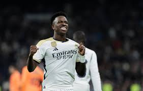
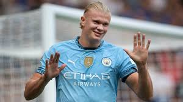
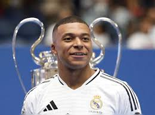

Top 5 Best Footballers in 2024 (ranked from least to GOAT!!)

5.Vinícius Júnior - The Brazilian winger is known for his explosive pace, dribbling skills, and key contributions for Real Madrid. He's rapidly become one of the top players in the world.

4.Erling Haaland - The Norwegian striker has been sensational for Manchester City, boasting an incredible goal-scoring record and physical dominance on the field.

3.Kylian Mbappé - The French forward has already achieved a lot at a young age, including winning the World Cup with France in 2018. His speed, skill, and finishing make him one of the top players of his generation.

2.Lionel Messi - Despite being in the latter stages of his career, Messi's skill, vision, and playmaking abilities keep him among the elite, with continued stellar performances for Inter Miami and the Argentina national team.
1.Cristiano Ronaldo-often referred to as "CR7," is a legendary Portuguese professional footballer who has played as a forward for various clubs and the Portugal national team.
Widely regarded as one of the greatest players of all time, Ronaldo is known for his exceptional athleticism, goal-scoring ability, and competitive spirit.